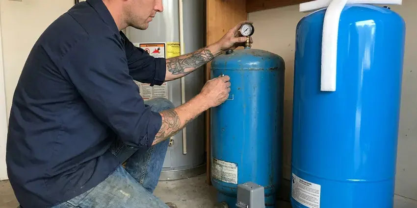

Gas Water Heater Replacement in Cedar Rapids, IA
Our licensed plumbers replace 40, 50 and 75 gallon gas water heaters in Cedar Rapids, IA with brands built to handle your local water.
- Quality Brands
- Transparent Pricing
- Gas Leak Testing Every Job
- Old Heater Haul-Away Included

Expert Gas Water Heater Replacement in Cedar Rapids, IA.
We provide professional installation, so your new gas water heater runs efficiently and safely.
Your Go-To for Gas Water Heater Replacement in Cedar Rapids, IA
KFR Plumbing specializes in professional gas water heater replacement services across Iowa. Our certified plumbers are equipped to handle the removal of your old unit and the precise installation of a new, energy-efficient model. This gives your home a reliable hot water supply.
Our expertise includes:
- Licensed and Insured Gas Water Heater Experts
- Atmospheric, power vent and direct vent gas tank installs
- Precise Venting and Gas Line Installation

Additional Plumbing Replacement Services in Cedar Rapids, IA
When repairs are no longer enough, our replacement services in Cedar Rapids, IA deliver durable upgrades that restore full performance.


Customers
Why Choose KFR Plumbing for Gas Water Heater Replacement in Cedar Rapids, IA?
Our team is dedicated to providing superior service, from helping you select the right unit to performing a flawless installation. We prioritize efficiency, safety and your long-term comfort.
- Local Expertise, KFR Plumbing understands the plumbing challenges in Cedar Rapids, from mineral buildup in the tank to foundation movement that can affect gas lines.
- Quality Brands, We work with leading manufacturers like Rheem, Bradford White and A. O. Smith, so you receive a durable and efficient gas water heater.
- Safety First, Gas appliances require careful handling, and our technicians are thoroughly trained in all safety protocols and code requirements for gas water heater installation.
Citywide Coverage
KFR Plumbing proudly serves every neighborhood of Cedar Rapids for gas water heater replacement and understands the varied housing styles and plumbing systems throughout the area. Whether you are in an older home or a new build, we are ready to provide expert service.
Experienced Team
Each KFR Plumbing technician is a specialist in gas appliance replacement, with the knowledge to safely disconnect your old unit, manage gas lines and install your new water heater. We follow manufacturer specifications and Iowa codes.
Safety-First Approach
We take every precaution during gas water heater replacement, from careful gas line connections to proper exhaust venting. Our process supports the safe and compliant operation of your new unit in Cedar Rapids, IA.
Trusted Certified Cedar Rapids Plumbing Services Professionals
At KFR Plumbing, we take pride in providing licensed, certified plumbing services throughout Cedar Rapids, IA. Backed by leading industry credentials, our experienced plumbers combine technical skill with genuine customer care. Whether it is repair, installation, or maintenance, we follow strict safety and quality standards to deliver long-lasting results you can trust.
Call Us Now PHCC Plumbing Contractor Recognition
PHCC Plumbing Contractor Recognition Better Business Bureau (BBB) Accreditation
Better Business Bureau (BBB) Accreditation Angi Certified Pro
Angi Certified Pro ISO 9001 Quality Management Certification
ISO 9001 Quality Management CertificationDependable Gas Water Heater Replacement Services in Cedar Rapids, IA
Power Vent Water Heater Replacement in Cedar Rapids
Power vent gas water heaters use an electric blower to push exhaust through PVC pipe, which lets them sit far from a chimney or roof flue. When the blower motor or pressure switch fails repeatedly, replacing the whole unit can be the better choice. We install new power vent models and confirm a dedicated outlet is available. Venting length and number of elbows must stay within the manufacturer's limits. Power vent tanks cost more but solve difficult placement problems.

Commercial Gas Water Heater Replacement in Cedar Rapids, IA
Beyond residential services, KFR Plumbing also handles commercial gas water heater replacement in Cedar Rapids, IA. Businesses, from restaurants to offices, have unique hot water needs. We install heavy-duty, high-capacity gas water heaters designed for commercial use, so your business operations run smoothly. Our team understands the stricter codes and specialized equipment often required for commercial installations.
Gas to Gas Brand Matching in Cedar Rapids, IA
Bradford White, Rheem and A.O. Smith each offer tanks with different warranty lengths, anode materials and burner designs. We explain the differences in plain terms so you know what you are paying for. Some models offer self-cleaning dip tubes that help with sediment in hard water. Others include powered anodes that resist corrosion longer. We help you choose based on your budget and how long you plan to stay in the home.
40 and 50 Gallon Tank Replacement in Cedar Rapids
The 40 and 50 gallon gas tank is the workhorse of most Iowa homes. When yours starts leaking from the bottom seam or produces rusty water, replacement is the only real fix. We match the new tank's height and diameter to your space and reuse the venting when it is in good shape. Newer tanks are sometimes taller due to efficiency standards, so we check clearance before ordering. Most of these jobs take about two to three hours.
Rheem and A.O. Smith Gas Water Heater Replacement in Cedar Rapids, IA
We install and replace Rheem and A.O. Smith gas water heaters throughout Cedar Rapids, IA. These brands are industry leaders, offering a wide selection of efficient and long-lasting models. Our technicians are factory-trained on the latest technologies from Rheem and A.O. Smith. You get a proper setup that maximizes your new water heater's performance and lifespan.
Bradford White Gas Water Heater Installation in Cedar Rapids
KFR Plumbing is a trusted installer of Bradford White gas water heaters in Cedar Rapids. Known for their durability and American-made quality, Bradford White units are a popular choice for many Iowa homeowners. We confirm proper sizing and installation according to manufacturer specifications, maximizing the lifespan and efficiency of your new unit. Our technicians are familiar with their venting and gas connection requirements.
Standard Vent Gas Water Heater Replacement in Cedar Rapids
Many homes in Cedar Rapids use standard atmospheric vent gas water heaters. When these units reach the end of their lifespan, typically 10 to 12 years, we provide expert replacement. Our service includes safely disconnecting the old unit, installing a new, energy-efficient model, and connecting it properly to your existing natural gas line and flue venting system. We also check for enough combustion air and perform a thorough leak test for safety and efficiency.

Propane Gas Water Heater Replacement in Cedar Rapids, IA
For homes outside the natural gas grid in Cedar Rapids, IA, or those that rely on propane, we offer dedicated propane gas water heater replacement services. Our team is experienced with propane systems, confirming correct gas line sizing, proper combustion and safe venting. We will replace your old propane unit with a new, dependable model. All connections are secure and up to code for propane gas appliances.
Gas Water Heater Replacement Near Me in Cedar Rapids, IA
A local plumber also knows the permit process, inspection requirements and typical installations in your area. We can tell you right away whether your venting and gas line will work with a new tank. Call us and we will give you a clear price before we start.
When you search for gas water heater replacement near me in Cedar Rapids, IA, KFR Plumbing is your local answer. We have local teams ready to serve your neighborhood, providing prompt and professional service right to your door. Being close by lets us respond quickly to your hot water emergencies.
KFR Plumbing at a Glance
- Licensed and insured plumbers serving Cedar Rapids, IA
- Same-day appointments and 24/7 emergency response
- Upfront, flat-rate pricing before work begins
- 4.8-star rated by 620+ Iowa customers
Cedar Rapids Map
Cedar Rapids Information
- Population
- 135,958
- Area codes
- 319/563/641
- Service area
- Cedar Rapids and communities within 40 miles
- Nearby
- Marion, Iowa City, Waterloo, Cedar Falls
For homes in Cedar Rapids, IA, a reliable gas water heater is essential for everyday comfort, especially with changing seasons and sediment in the water that can wear down older units.
Expert Services
Trust our professionals for reliable KFR Plumbing solutions in Cedar Rapids, IA.
Our Specialized Plumbing Services in Cedar Rapids, IA
At KFR Plumbing, we provide a complete range of plumbing services across Cedar Rapids, IA. From leak detection to full system installations, our team ensures fast, precise, and affordable service for both residential and commercial properties. Explore our core services below:


How Our Gas Water Heater Replacement Service Works in Cedar Rapids, IA
We follow a clear, step-by-step procedure for a safe, dependable and compliant gas water heater installation for every Cedar Rapids client.
Request a Quote
Call (515) 308-3583 and tell us your tank size and location. We give you an upfront installed price and a time window.
Remove Old Tank
We shut off gas and water, drain the old heater and haul it away. We inspect the gas line, venting and shutoff valves.
Install and Light
We set the new tank with straps, new connectors and a drain pan, then leak test and light it. We confirm draft and set a safe water temperature.
Frequently Asked Questions About Gas Water Heater Replacement in Cedar Rapids
A standard 40 or 50 gallon gas water heater replacement usually runs $1,800 to $3,200 installed, including haul-away and basic code upgrades. Larger 75 gallon or power vent units usually cost $3,000 to $4,800. We give a firm price before we start.
Yes. Many modern gas water heaters, including some tank-style and all tankless models, are designed for higher energy efficiency. We can discuss Energy Star rated options that can save you money on utility bills in Cedar Rapids, IA.
We install all major trusted brands of gas water heaters, including Rheem, A.O. Smith, Bradford White and Noritz. We can help you pick the best brand and model to suit your budget and hot water demands.
Most cities and counties in Iowa require a permit for water heater replacement because it involves gas and venting. We handle the permit when one is required.
Tank warranties typically range from 6 to 12 years depending on the model. We add our own labor warranty on the installation.
Most standard gas water heater replacements in Cedar Rapids can be completed within 3 to 5 hours. More complex installations, such as converting to a different type of unit or major plumbing changes, may take longer.
Atmospheric vent water heaters use natural convection to vent combustion gases up a chimney or flue. Power vent models use an electric fan to force gases out, allowing for more flexible venting options and often higher efficiency due to more complete combustion.
Regular maintenance, such as annual flushing to remove sediment and checking the anode rod, can significantly extend your gas water heater's lifespan. Proper sizing and professional installation also play a crucial role.
What People Are Saying About Our Plumbing Experts?

Patricia H.
We had a slab leak that two other companies could not find. KFR Plumbing located it in under an hour, explained our options, and the price matched the quote to the dollar.
Slab Leak Repair · Cedar Falls, IA
Emily R.
I called KFR Plumbing for plumbing repair, and the technician was fast, polite, and thorough. They explained the problem clearly and fixed it the same day. I will definitely hire them again. Highly recommended!
Plumbing Repair · Cedar Rapids, IA
Laura S.
I scheduled a water heater replacement, and the team made the process smooth and affordable. The new unit works perfectly, and they cleaned up after completing the job.
Water Heater Replacement · Cedar Rapids, IA
Mark T.
When our office needed drain cleaning, KFR Plumbing provided quick, reliable service. The plumber arrived on time and made sure every drain flowed perfectly before leaving. Very satisfied.
Drain Cleaning · Marion, IASofia M.
Two new toilets installed in one visit, no mess left behind, and the tech even adjusted a faucet he noticed was dripping. Fair pricing and really friendly.
Toilet Installation · Cedar Falls, IA
Daniel K.
A pipe burst at 11 pm and they actually answered. The plumber showed up within the hour, shut everything down, and had us back to normal the next morning. Could not ask for more.
Emergency Plumbing · Cedar Falls, IA